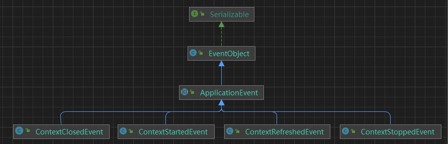

Spring事件机制
观察者模式：
事件监听机制也可以看做是一种对传统观察者模式的具体实现，不同的框架对其实现方式会有些许差别，Spring的事件监听机制可以说是在典型观察者模式基础上的进一步抽象和改进。
观察者模式是一个典型的订阅-发布模型，其主要涉及到四种角色：
- 抽象被观察者角色：内部持有所有观察者角色的引用，并对外提供新增、移除观察者角色、通知所有观察者的功能；
- 具体被观察者角色：当状态变更时，会通知到所有的观察者角色；
- 抽象观察者角色：抽象具体观察者角色的一些共性方法，如状态变更方法；
- 具体观察者角色：实现抽象观察者角色的方法；
我们可以把被观察者替换成**事件(event)，把对被观察者进行观察的观察者(Observer)替换成对特定事件进行监听的监听器(EventListener)，而把原有主题中负责维护被观察者与观察者映射关系以及在自身状态改变时通知观察者的职责从中抽出，放入一个新的角色事件发布器(EventPublisher)**中，这就是一个事件监听机制的基本构成。
Spring框架对事件的发布与监听提供了相对完整的支持，它扩展了JDK中对自定义事件监听提供的基础框架，并与Spring的IOC特性作了整合，使得用户可以根据自己的业务特点进行相关的自定义，并依托Spring容器方便的实现监听器的注册和事件的发布。因为Spring的事件监听依托于JDK提供的底层支持，为了更好的理解，先来看下JDK中为用户实现自定义事件监听提供的基础框架。
JDK事件监听机制
JDK为用户实现自定义事件监听提供了两个基础的类。
一个是代表所有可被监听事件的事件基类java.util.EventObject，所有自定义事件类型都必须继承该类，类结构如下所示：
1 | public class EventObject implements java.io.Serializable { |
该类内部有一个Object类型的source变量，逻辑上表示发生该事件的事件源，实际中可以用来存储包含该事件的一些相关信息。
另一个则是对所有事件监听器进行抽象的接口java.util.EventListener，这是一个标记接口，内部没有任何抽象方法，所有自定义事件监听器都必须实现该标记接口。
1 | /** |
此外我们还要定义一个事件发布器来管理事件监听器并提供发布事件的功能。
Spring容器的事件监听机制
Spring容器，具体而言是ApplicationContext接口定义的容器提供了一套相对完善的事件发布和监听框架，其遵循了JDK中的事件监听标准，并使用容器来管理相关组件，使得用户不用关心事件发布和监听的具体细节，降低了开发难度也简化了开发流程。面看看对于事件监听机制中的各主要角色
事件（ApplicationEvent）
Spring为容器内事件定义了一个抽象类ApplicationEvent，该类继承了JDK中的事件基类EventObject。因而自定义容器内事件除了需要继承ApplicationEvent之外，还要传入事件源作为构造参数。
1 | public abstract class ApplicationEvent extends EventObject { |
Spring内置事件介绍
在Spring容器中已经内置了一些常用的事件，如IOC容器刷新开始、结束、关闭等事件，如下图：
1、ContextRefreshedEvent
ApplicationContext 被初始化或刷新时，该事件被发布。这也可以在 ConfigurableApplicationContext接口中使用 refresh() 方法来发生。此处的初始化是指：所有的Bean被成功装载，后处理Bean被检测并激活，所有Singleton Bean 被预实例化，ApplicationContext容器已就绪可用
2、ContextStartedEvent
当使用 ConfigurableApplicationContext （ApplicationContext子接口）接口中的 start() 方法启动 ApplicationContext 时，该事件被发布。你可以调查你的数据库，或者你可以在接受到这个事件后重启任何停止的应用程序
3、ContextStoppedEvent
当使用 ConfigurableApplicationContext 接口中的 stop() 停止 ApplicationContext 时，发布这个事件。你可以在接受到这个事件后做必要的清理的工作
4、ContextClosedEvent
当使用 ConfigurableApplicationContext 接口中的 close() 方法关闭 ApplicationContext 时，该事件被发布。一个已关闭的上下文到达生命周期末端；它不能被刷新或重启
5、RequestHandledEvent
这是一个 web-specific 事件，告诉所有 bean HTTP 请求已经被服务。只能应用于使用DispatcherServlet的Web应用。在使用Spring作为前端的MVC控制器时，当Spring处理用户请求结束后，系统会自动触发该事件
事件监听器（ApplicationListener）
事件监听器（ApplicationListener）对应于观察者模式中的具体观察者角色，当事件发布之后，就会执行事件监听器的逻辑。通过实现ApplicationListener接口，并重写onApplicationEvent()方法，我们可以监听到事件发布器发布的事件。Spring定义了一个ApplicationListener接口作为事件监听器的抽象，其定义如下：
1 |
|
事件发布器（ApplicationEventPublisher）
我们可以直接使用ApplicationEventPublisher的publishEvent(Event)方法进行事件的发布，也可以通过ApplicationEventPublisher接口，并重写publishEvent()方法，我们可以自定义事件发布的逻辑。其定义如下：
1 |
|
也可以直接使用ApplicationContext上下文类进行事件发布。因为ApplicationContext继承了ApplicationEventPublisher接口，因此，我们可以通过实现ApplicationContextAware接口，注入ApplicationContext，然后通过ApplicationContext的publishEvent()方法来实现事件发布功能。

注意，ApplicationContext容器本身仅仅是对外提供了事件发布的接口仅仅是对外提供了事件发布的接口publishEvent()，真正的工作其实是委托给了具体容器内部一个ApplicationEventMulticaster对象如下：
1 | // AbstractApplicationContext#applicationEventMulticaster |
所以，真正的事件发布器其实是ApplicationEventMulticaster，ApplicationEventMulticaster可以类比成观察者模式的抽象被观察者角色
举例
比如在等所有bean加载完之后执行某些操作注意的是**先有 InitializingBean，后有 ApplicationListener< ContextRefreshedEvent>**，也就是在IOC将所有的bean 都处理完成后会触发的时间。
1 | public class SystemListener implements ApplicationListener<ContextRefreshedEvent> { |
@EventListener 注解
除了通过实现接口，还可以使用注解@EventListener（Event）其中Event为指定 classes，即需要处理的事件类型，一般就是 ApplicationEven 及其子类，可以设置多项。
原理
使用EventListenerMethodProcessor处理器解析@EventListener注解
@Async注解
如果要使用异步启动类上加上@EnableAsync注解，方法上加@Async注解。@Async注解来表示该方法是一个异步任务。当其它线程调用这个方法时，就会使用Spring默认的线程池为SimpleAsyncTaskExecutor开启一个新的子线程去异步处理该业务逻辑。
使用Spring事件监听实现点赞异步业务案例
自定义ApplicationEvent事件对象
自定义事件对象必须继承ApplicationEvent类，并提供对应的构造方法：
1 |
|
自定义ApplicationListener事件监听器
使用@EventListener注解实现监听方法，在监听方法中依据传进来的LikesEvent信息机型业务逻辑处理，其中使用@Async注解异步处理。
1 |
|
事件发布器发布事件：
1 | eventPublisher.publishEvent(new LikesEvent(this, postId, LikesTypeEnum.LIKE_POST)); |